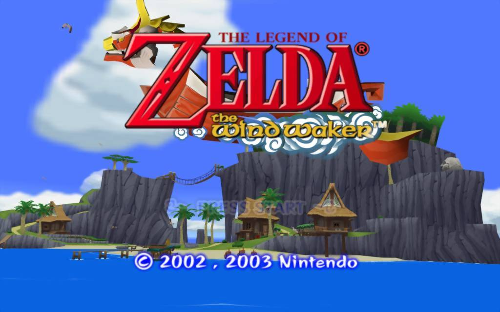

The Legend of Zelda: The Wind Waker is the tenth Legend of Zelda game made. It was released in the US on March 24, 2003. It was originaly for the GameCube. It has grown greatly in reputation since it has been released, so much that they made a HD version.
